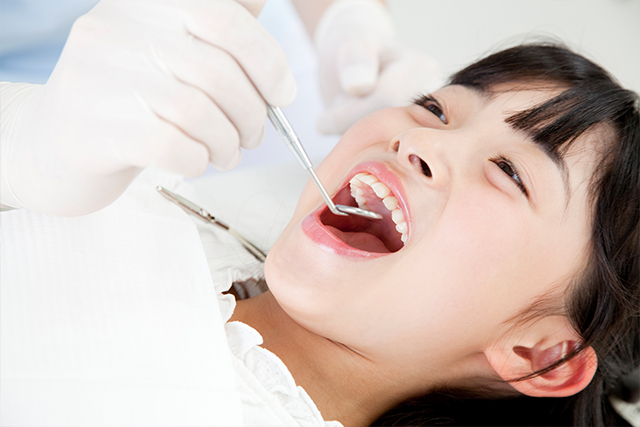
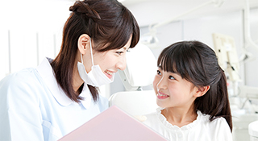
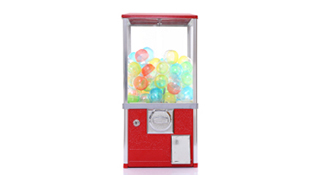
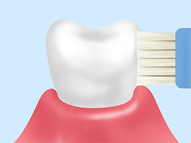
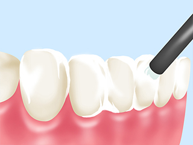
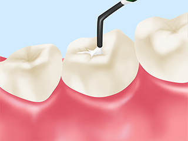

Kids小児歯科
子どもの歯を守るために～小児歯科～

当院の小児歯科の特徴
初めての場所や知らない人がいる環境に連れて行くと、不安になってしまうお子さんがいらっしゃいます。そこで歯科医院に悪い印象を持ってしまうと、お子さんは「歯医者嫌い」になり、これから先の通院が難しくなってしまうでしょう。そこで当院では、お子さんの気持ちを大切にしながらの診療を心がけています。
-

いきなり治療はせずに
まずはコミュニケーションを取ります初めて診療のためにご来院されたお子さんには、まず診療トレーニングからはじめます。内容としては、歯科医院の雰囲気や診療ユニットなどに慣れていただけるよう、チェアに座ってお口の中を鏡で見てもらったり、お口を開けていただき空気をかけたりするというものです。スタッフとお話ししたりコミュニケーションを取ったりすることから開始して、徐々に信頼関係を築いていきます。
-

治療後には
ごほうびがあります治療後に楽しい気分になっていただけるように、ちょっとしたごほうびをプレゼントします。ご家庭でも、診療を受けたことをほめてあげてください。「がんばったね」「また行こうね」と、ご家族みなさんでお声をかけてあげれば、「また歯医者に行こう」という気持ちになってくれるでしょう。
歯を守るための処置
ブラッシング指導

成長段階やお口の状態は一人ひとり異なりますので、お子さんに合わせたブラッシング方法をアドバイスします。ご家族の方には仕上げみがきのコツもお伝えしますので、毎晩の就寝前にしっかり汚れを落としてあげてください。
フッ素塗布

歯質を強化したり歯の再石灰化を促したりするだけでなく、細菌の活性化を抑える働きが期待できるフッ素を、歯面に塗布します。定期的なフッ素塗布は、乳歯や永久歯の虫歯予防に有効です。
シーラント

奥歯の永久歯である「6歳臼歯」の噛み合わせ面にある複雑な溝は、汚れがたまりやすく虫歯になりやすい部位です。そこをあらかじめレジン（歯科用プラスチック）でふさぎ、虫歯を防止します。
ご家庭での仕上げみがきが大切です

ある程度成長するまで、子どもは自分だけでは歯のケアができません。毎日のケアでお子さんのお口の健康を守ってあげられるのは、ご家族の方しかいないのです。歯は生えはじめたそのときから虫歯にかかってしまうリスクが生じますので、ご家族の方がしっかりケアしてあげるようにしてください。
親御さんの仕上げみがきについて
| 赤ちゃんのとき | 歯ブラシが持てるようになったら | 永久歯が生えそろうころ |
|---|---|---|
| ぬれたガーゼなどで歯や歯ぐきをやさしく拭ってあげましょう。 | ブラッシングを習慣にしましょう。ブラッシングのマネだけでも構いません。その後でご家族の方がしっかり仕上げみがきをしてあげてください。 | お子さんだけでもブラッシングができるようになっているはずです。ときどきチェックをしてあげてください。 |
仕上げみがきのコツ
- 歯ブラシは軽い力で歯に当てましょう。
- 歯ブラシの毛先は歯面に垂直に当ててください。
- 1～2mm程度動かし、小刻みに丁寧にみがきましょう。
- 1本の歯につき20回以上動かして、食べかすや歯垢（プラーク）を落としましょう。
- 就寝中は唾液の分泌量が減り虫歯になりやすい時間帯ですので、仕上げみがきは就寝前に行ってください。